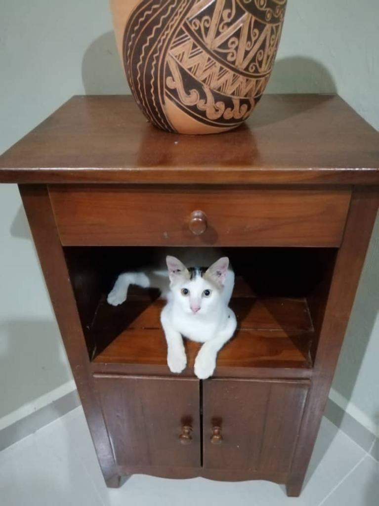
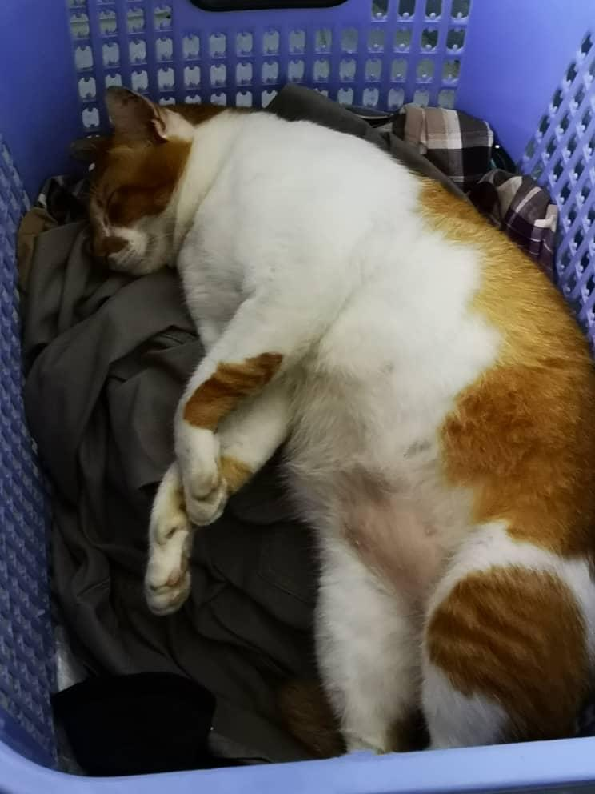
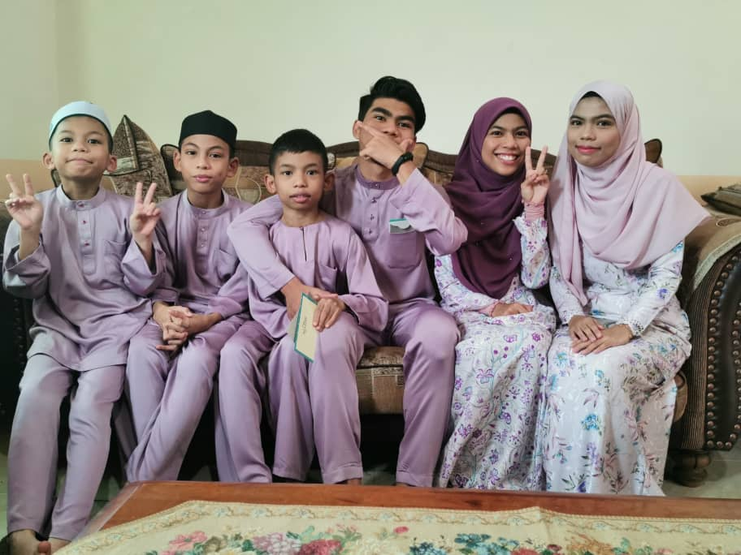

MY PERSONAL BIOGRAPHY
My name is Nur Hanisah Binti Muhammad Amri (2019359035).
My Key Features
 I have two male cats. Their name is Tony and Bobby. Tony is orange and white colour. My dad took him when he was still a baby at the fish market. Bobby is white and have little black spot on his head. Bobby fell from someone's car exhaust and my dad decided to save him and keep him with us.


I am the type of person that can be friend with everyone. I don't get close that fast but I am able to make a conversation with someone that I just meet. In my group of friends, I am the loud and hype person. I make sure that everyone get comfortable with me. I love all my friends that has been with me since day one.
I am the eldest one in my siblings. I have one sister and four brothers. I take care of everyone in my siblings since they were little. We are very close and I always disciplined them when my parents are not home. I love them so much and I will always try my best to be a good sister to them.